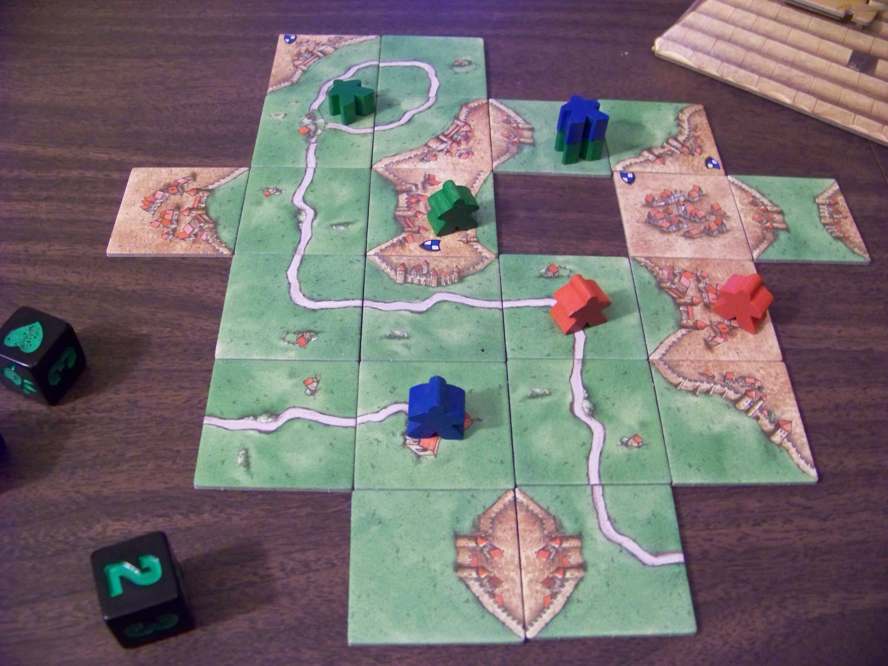

Love Letter Decision Tree

How many different ways can a round of Love Letter unfold?
3/25/2017
Helpful tips for your next board game extravaganza.
Posted on 4/1/2017 by Tim Rice
Are you looking for a cheap and simple way to get the family together for a good time? You can’t go wrong with a good old-fashioned family board game night.
If you’re like me though, and most of your gaming time is spent with a dedicated gaming group, it can be a challenge to host a game night for people that don’t play board games often. Luckily, I’ve written some tips that will help. Follow this advice, and your next family gathering is sure to be a success!
Selecting a game to play with your family can be tricky, especially if your family isn’t as interested in games as you are. However, this is a great opportunity to introduce some new people to the vast world of hobby gaming, and the best way to do that is to throw them in at the deep end.
As a general guideline, longer is better. Family games and party games usually don’t have many rules, and you can tell how engaging a game is based on the number of pages in its rulebook. If it takes less than twenty minutes to explain, it’s not worth anyone’s time.
If somebody asks how long it will take to play your game, lie and say it’ll take about an hour. Some people get apprehensive when faced with long-term commitments, so don’t give them an excuse to leave. It will be much harder for them to quit once they’ve already invested an hour of their lives.
Here are a few games to consider for your next get-together:
It’s important to offer a wide variety of snacks for your guests to enjoy during game time. Remember that this is a party, so think outside the box and get creative. Here are a few suggestions:
If you don’t have a dining room table, a coffee table will work just as well. Your guests will be perfectly content sitting on the floor or leaning from the edge of the couch.
Start playing as soon as possible, even if you’re waiting on more people to show up. It’s their fault for being late, after all, and you definitely don’t want to waste time making conversation.
If someone brings or requests to play a game that isn’t on BoardGameGeek’s top 100 list, deny them. The games in your collection are objectively better, and therefore your family will undoubtedly enjoy them more.
When giving rules explanations, make sure everyone at the table has your undivided attention. It is essential that the other players know every single rule in the game before starting. A good way to ensure that this happens is to read directly from the rulebook.
If anyone forgets or misses a rule during the game, never invite them again. They are not worthy of a spot at your table.
Since you probably know the game better than anyone else at the table, the other players will be relying on you for strategy tips. If another player makes a suboptimal move, make sure to let them know what they should have done instead.
If it’s a cooperative game, it’s your responsibility to lead the team, which means you have the right to make all final decisions. In Pandemic, for example, you definitely don’t want to lose because your brother-in-law would rather cure a disease in Tokyo than stop the impending outbreak in Atlanta… That would obviously ruin everyone’s night, so it’s up to you to make sure the game stays on track. Move their pieces for them if necessary.
Remember that this is a social event, so you’re expected to participate in the inevitable small talk. If you find that there is an awkward silence, here are some great conversation starters:
One of the unique things about board games is that they encourage genuine human connection. There’s something special about sitting around the same table with your loved ones and engaging each other in friendly competition.
Try not to let any of that crap get in the way of your ultimate goal: crushing your opponents. Don’t even dream of going easy on them. They will lose all respect for you if you lose. Cheat if you have to.
Thanks for reading!